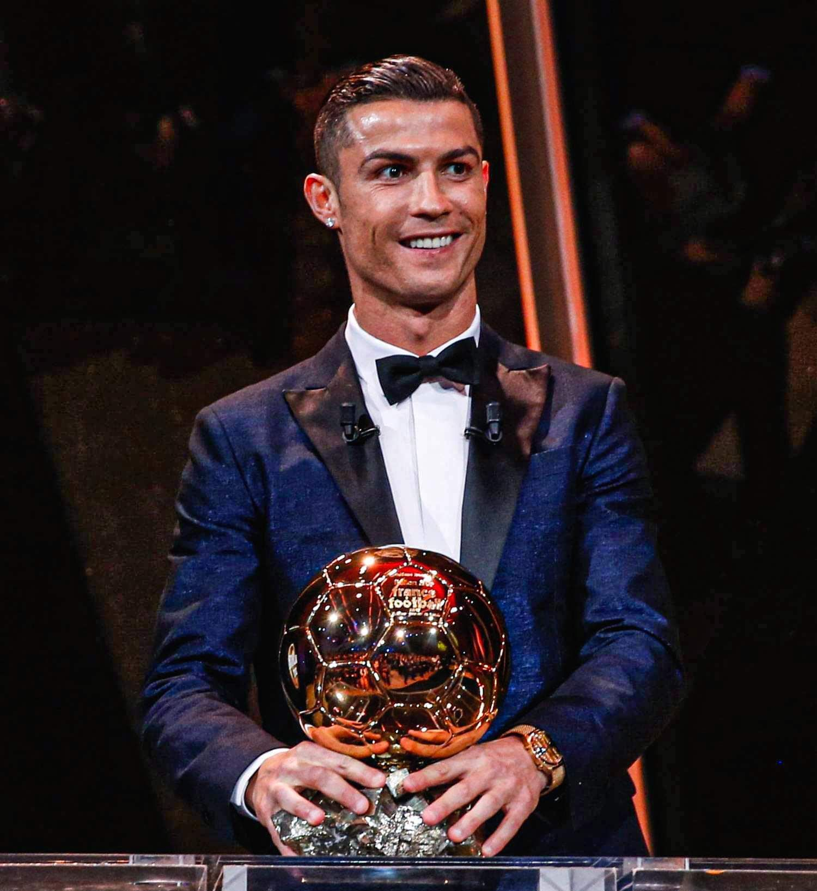
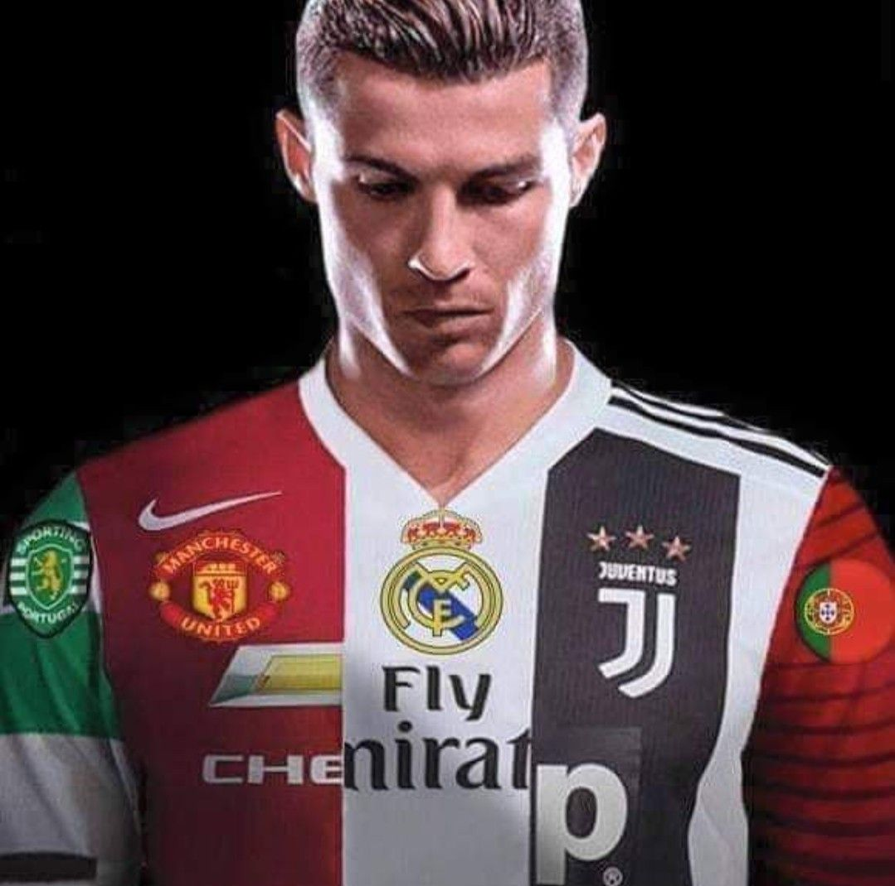
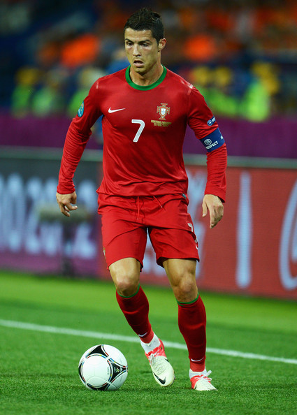

Prijzen

Ronaldo maakte na zijn overstap van Sporting CP tussen 2003 en 2009 al helemaal stuk bij United, waarvoor hij in totaal 292 officiële duels speelde en 118 keer scoorde.
Hij won bij de Engelse topclub 9 hoofdprijzen: 3 keer de landstitel, 1 keer de Champions League, 1 keer de FA Cup, 2 keer de League Cup, 1 keer de Community Shield en 1 keer de wereldtitel voor clubs.
Daarnaast werd Ronaldo in deze periode beloond met verschillende individuele prijzen. Hij werd 2 keer speler van het seizoen bij Manchester United en werd in het seizoen 2007/2008 met 31 goals topscorer van de Premier League.
Bij Real Madrid kwam de doelpuntenmachine van Ronaldo pas echt op gang. In zijn negen seizoenen bij de Spaanse topclub slaagde Ronaldo er telkens in minimaal 25 doelpunten in La Liga te maken.
In 438 wedstrijden in het shirt van 'De Koninklijke' kwam hij tot het duizelingwekkende aantal van 450 doelpunten. Daarnaast gaf hij 132 assists.
Met Real won Ronaldo 4 keer de Champions League, 2 keer de landstitel, 2 keer de Spaanse beker, 2 keer de Spaanse supercup, 2 keer de Europese supercup en 3 keer de wereldtitel voor clubs.
In Spanje streed hij met Lionel Messi vrijwel jaarlijks om de topscorerstitel. Die strijd won de Portugees in 3 seizoenen. Daarnaast werd hij als speler van Real in 6 seizoenen topscorer van de Champions League.
Clubs

n het seizoen 2006/2007 ontwikkelde hij zich tot een van de beste spelers ter wereld. Hij werd tweemaal achtereen tot speler van de maand gekozen. Na belangstelling van Real Madrid tekende hij in april 2007 een nieuw contract dat hem voor vijf jaar aan United bond. Met een salaris van £ 120.000 per week werd hij de best betaalde speler in de geschiedenis van de club.
Zijn succesvolste jaar tot nu toe is 2008. In juni 2009 vertrok hij van Manchester United naar de Spaanse topclub Real Madrid. Op 22 oktober scoorde Cristiano Ronaldo zijn snelste hattrick ooit uit zijn loopbaan. Ronaldo wist binnen 15 minuten 3 doelpunten te scoren. In het seizoen 2011/2012 won Ronaldo zijn tweede prijs met 'De Koninklijke', namelijk het kampioenschap. Opnieuw vestigde Ronaldo een persoonlijk record door 46 doelpunten in één seizoen te maken. Ronaldo was samen met teamgenoten Gonzalo Higuain en Karim Benzema goed voor 118 doelpunten in één seizoen.
Internationaal

Portugal kwalificeerde zich op dinsdag 19 november 2013 voor deelname aan het WK 2014 door een beslissende play-offwedstrijd tegen Zweden met 2–3 te winnen. Ronaldo maakte alle drie de Portugese doelpunten. Hij kwam daarmee op 47 interlanddoelpunten en evenaarde zo Pedro Pauleta als topscorer aller tijden van het Portugees voetbalelftal. Hij werd vervolgens op 5 maart 2014 alleenrecordhouder door twee keer te scoren tijdens een met 5–1 gewonnen oefeninterland tegen Kameroen.
Het WK 2014 was Ronaldo's derde en kortste wereldkampioenschap. Portugal eindigde in de poulefase achter Duitsland en Amerika en mocht zodoende na drie wedstrijden naar huis. Ronaldo scoorde één keer, de winnende 2–1 in de derde groepswedstrijd tegen Ghana
Ronaldo begon het WK 2018 met een hattrick in Portugals eerste groepswedstrijd, tegen Spanje (3–3). Daarmee werd hij de eerste speler ooit die in acht eindronden (EK en WK) op rij scoorde. Zijn doelpunten tegen Spanje maakten van Ronaldo ook de vierde speler ooit die op vier verschillende WK's scoorde.